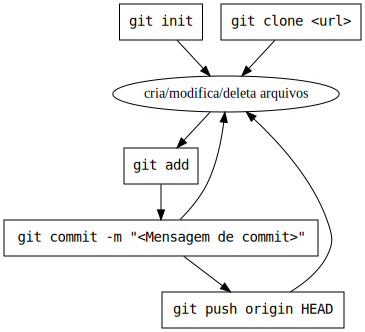

Conteúdo introdutório essencial para entrar na área de desenvolvimento web
A ideia do projeto nasceu de dois interesses:
Caso tenha interesse em contribuir, seja acrescentando/melhorando/removendo assuntos quanto corrigindo erros de português, acesse o projeto
Mantido com uma linguagem informal, o conteúdo a seguir pretende ensinar de maneira simples assuntos introdutórios para entrar na área de desenvolvimento web. Abordaremos:
Os assuntos serão pouco aprofundados, a proposta desse material é explicar o essencial para que você (leitor) estude tópicos mais avançados por conta própria ou saiba reconhecer cursos/livros interessantes. Não prometo que ao final da leitura você estará apto para a primeira vaga, pois acredito que o ideal é desenvolver e expor projetos pequenos no Github e Linkedin.
Após dominar os assuntos presentes nesse material, recomendo o estudo de:
Não, algumas empresas maiores podem exigir, porém é muito fácil de encontrar vagas que não se importam com isso. Vale mais a pena focar em conseguir a primeira oportunidade e depois cogitar ir para uma faculdade.
Não, mas certamente ajudaria para pesquisar mais tópicos e conteúdos mais especializados.
Recomendo ler 3 vezes: 1) uma primeira leitura rápida para alinhar a expectativa do que será abordado, 2) mais calma fazendo anotações e praticando quando fizer sentido e 3) rápida para entender os conceitos abordados e praticados.
Acredito que no mínimo um processador i3 e 4gb de RAM.
Visual Studio Code, não confundir com Visual Studio. Vai ser a ferramenta que usaremos para escrever nos arquivos.
O desenvolvimento web é uma área específica dentro da área de desenvolvimento de software (programa). De maneira simplificada, a web é o acesso a sites/sistemas online utilizando o protocolo HTTP, onde que é feita uma requisição a um servidor e é retornada uma resposta (podendo ser em HTML, JSON ou outros formatos).
Se tratando de desenvolvimento web existem duas ramificações:
Uma página web normalmente vai ter um conteúdo, estilização e
interação (respectivamente: HTML, CSS e
Javascript). O navegador/browser lê os arquivos recebidos do
back-end (.html, .css e .js) e
renderiza de acordo. Porém com
ctrlshifti podemos ver como eles
realmente são: texto!
Imagine o seuginte cenário: O navegador recebe um arquivo contendo todo o conteúdo do site, como ele sabe o que é título, link, lista e etc? Afinal, é uma informação necessária para delimitar a informação, exemplo:
Lista de compras
Mercado
Farinha
Leite
OvosPode ser lido como
Lista de compras <- titulo
Mercado <- item da lista
Farinha <- item da lista
Leite <- item da lista
Ovos <- item da listaou
Lista de compras <- titulo
Mercado <- subtitulo
Farinha <- item da lista
Leite <- item da lista
Ovos <- item da listaPara isso existem as tags, cujo explicitam a intenção de um grupo de texto. O exemplo anterior ficaria da seguinte forma:
<h1>Lista de compras</h1>
<h2>Mercado</h2>
<ul>
<li>Farinha</li>
<li>Leite</li>
<li>Ovos</li>
</ul>Tags abrem, envolvem e fecham da seguinte maneira:
<nome>conteudo</nome>
Sua vez: Crie um arquivo chamado
teste.html, e abra de duas maneiras diferentes: 1) com seu editor de texto e 2) com o navegador. Escreva a lista de compras pelo editor de texto e visualize as alterações no navegador! Lembre de atualizar a página do navegador com F5 a cada mudança.
Todas tags podem possuir classes e um id. Esses artíficios não são visuais, eles servem para registrar de alguma forma essa tag para poder ser utilizada mais facilmente pelo CSS e Javascript.
<h1 class="titulo">Lista de compras</h1>
<h2 id="subtitulo">Mercado</h2>
<ul>
<li class="item-novo importante">Farinha</li>
<li class="">Leite</li>
<li class="importante">Ovos</li>
</ul>Não basta especificar um título, link etc, precisamos estilizá-lo também. Tamanho da fonte, cor, alinhamento e outras propriedades são configuráveis.
Essas estilizações são feitas com um arquivo .css, para
mudar a cor do título podemos fazer o seguinte:
h1 {
color: blue;
}Especificamos com um seletor e em seguida atribuimos alguma de suas propriedades. Os seletores mais comuns são: nome da tag, classe ou id.
.titulo { /* classe */
color: blue;
}#subtitulo { /* id */
color: blue;
}Para utilizar as definições feitas pelo CSS precisamos importar elas no nosso HTML precisamos alterá-lo com:
<head>
<link rel="stylesheet" href="./nome-do-arquivo.css">
</head> Com conteúdo estruturado e estilizado falta adicionar interação ao site.

Criaremos um sistema de agendamento chamado Reiserva onde que:
Trabalharemos com TDD, primeiro criamos um teste falho, fazemos ele passar, melhoramos e repetimos. O foco será sempre utilizar o teste, não necessariamente validar em tela algum fluxo, mas sinta-se livre para fazê-lo.
Algumas vezes nos testes utilizaremos os seguintes termos para comentar a intenção estrutural do bloco de código dentro do teste:
Qual usuário? Qual contexto do banco?
Qual o método que vai ser chamado?
Quais as consequências? Elas correspondem ao esperado? Valor persistido? Evento emitido? E-mail enviado?
Breve explicação da syntax do PHP com o arquivo final da primeira versão de uma classe que criaremos.
<?php // tag obrigatória para escrever script php
/*
* Pacote/"Sobrenome" do arquivo, normalmente segue o padrão de pasta.
* Arquivos com App\Services está na pasta app/services
*/
namespace App\Services;
// Importação de outras classes através de seu Namespace + nome da classe
use App\Models\Ambiente;
use App\Models\Reserva;
use App\Models\User;
/*
* Classe é como uma "gaveta" cujo possui:
* propriedades: semelhantes a variáveis
* métodos: semelhantes a funções
*/
class ReservaService
{
// método
public function criar(Ambiente $ambiente, User $usuario)
{
// variável com $
// propriedade acessada através de ->
$reserva = new Reserva();
$reserva->id_ambiente = $ambiente->id;
$reserva->id_usuario = $usuario->id;
$reserva->save();
}
}Mesmo utilizando laravel, cujo é um framework que estipula padrões para nós, podemos complementá-lo com nossas próprias definições, cujo serão:
ServiceProvider, cujo
implementará uma interfaceCada um desses pontos vai ser abordado e aprofundado no decorrer do desenvolvimento do projeto.
BCMath Ctype
Fileinfo JSON Mbstring
OpenSSL PDO Tokenizer
XMLAcesse a pasta onde guarda seus projetos, abra um terminal e execute
composer create-project laravel/laravel reiservaVamos validar que dado um usuário (User) e um ambiente,
podemos criar uma reserva através da classe
ReservaService.
php artisan make:test ReservaServiceTest no terminal dentro
do projetoEsse comando (scaffold) é uma facilidade do Laravel, cujo vai criar o arquivo de teste no local correto. Durante o andamento do projeto utilizaremos outros semelhantes a esse
testReservaAmbiente como abaixoA nomenclatura de testes utilizada é a do Spotify
SUT significa System Under Test
<?php
namespace Tests\Unit;
use App\Models\User;
use App\Models\Ambiente;
use App\Models\Reserva;
use App\Services\ReservaService;
use Illuminate\Foundation\Testing\RefreshDatabase;
use Tests\TestCase;
class ReservaServiceTest extends TestCase
{
use RefreshDatabase;
public function testReservaAmbiente(): void
{
// Arrange: usuário existente
$usuario = new User([
'name' => 'Fulano de tal',
'email' =>'fulano@tal.com',
'password'=> '123',
]);
$usuario->save();
// Arrange: ambiente existente
$ambiente = new Ambiente();
$ambiente->nome = 'Salão de festas';
$ambiente->save();
// Act: criação da reserva
$sut = new ReservaService();
$sut->criar($ambiente, $usuario);
// Assert: existência da reserva no banco de dados
$this->assertDatabaseHas(Reserva::class, [
'id_ambiente'=> $ambiente->id,
'id_usuario'=> $usuario->id
]);
}
}php artisan test --filter testReservaAmbiente e perceba que
falhou por faltar algumas dessas classesFAILED Tests\Unit\ReservaServiceTest > reserva ambiente
Class "Tests\Unit\User" not foundphp artisan make:model Reserva
php artisan make:model AmbienteReservaService como
app/Services/ReservaService.test (não tem comando pra esse,
já que é convenção nossa)<?php
namespace App\Services;
class ReservaService
{
public function criar()
{
// ...
}
}php artisan test --filter testReservaAmbiente) e perceba
que o erro mudou. Agora ele está falhando pois não sabe persistir
(->save()) o ambiente (User é uma entidade
existente no laravel). Precisamos criar as tabelas nos bancos, porém não
de qualquer forma, mas sim com migrations.FAILED Tests\Unit\ReservaServiceTest > reserva ambiente
SQLSTATE[42S02]: Base table or view not found: 1146 Table 'testing.ambientes' doesn't exist (Connection: mysql, SQL: insert into `ambientes` (`nome`, `updated_at`, `created_at`) values (Salão de festas, 2023-06-22 07:07:23, 2023-06-22 07:07:23))Migration é um script que é lido e possui o proposito de alterar a estrutura do banco de dados, seja criando tabelas ou até modificando-as (renomeando campos, mudando seus tipos etc)
php artisan make:migration cria_ambiente --create=ambientes
e acesse o arquivo criado dentro de database/migrations.
Adicione nas propriedades o nome do ambiente.<?php
// ...
Schema::create('ambientes', function (Blueprint $table) {
$table->id();
$table->string('nome');
$table->timestamps();
});
// ...php artisan test --filter testReservaAmbiente) e perceba
que ocorreu o mesmo com a tabela de reservas. Crie uma nova migration
com
php artisan make:migration cria_ambiente --create=reservas<?php
// ...
Schema::create('reservas', function (Blueprint $table) {
$table->id();
$table->foreignId('id_usuario')->constrained('users');
$table->foreignId('id_ambiente')->constrained('ambientes');
$table->timestamps();
});
// ...FAILED Tests\Unit\ReservaServiceTest > reserva ambiente
Failed asserting that a row in the table [reservas] matches the attributes {
"id_ambiente": 1,
"id_usuario": 1
}.<?php
namespace App\Services;
use App\Models\Ambiente;
use App\Models\Reserva;
use App\Models\User;
class ReservaService
{
public function criar(Ambiente $ambiente, User $usuario)
{
$reserva = new Reserva();
$reserva->id_ambiente = $ambiente->id;
$reserva->id_usuario = $usuario->id;
$reserva->save();
}
}